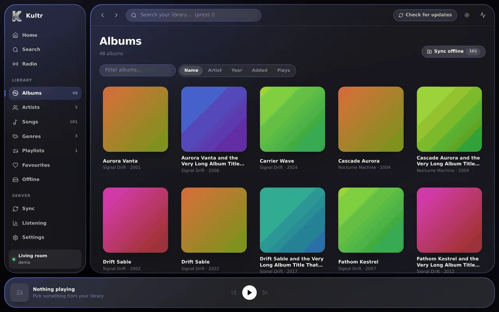
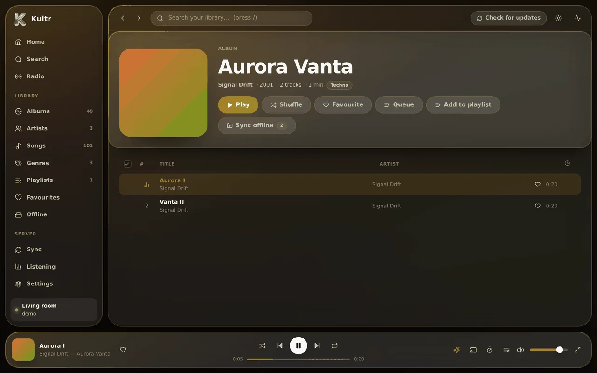
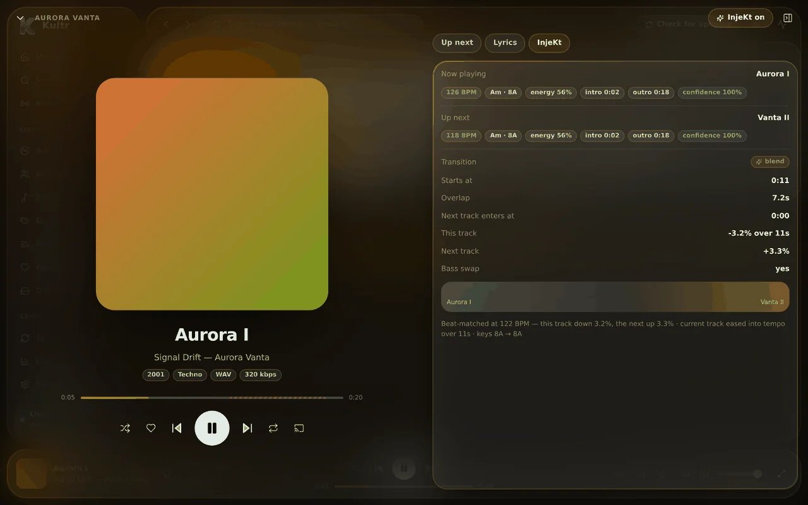
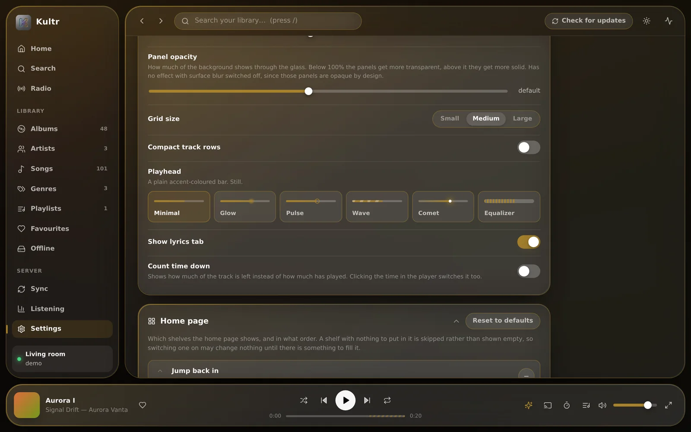
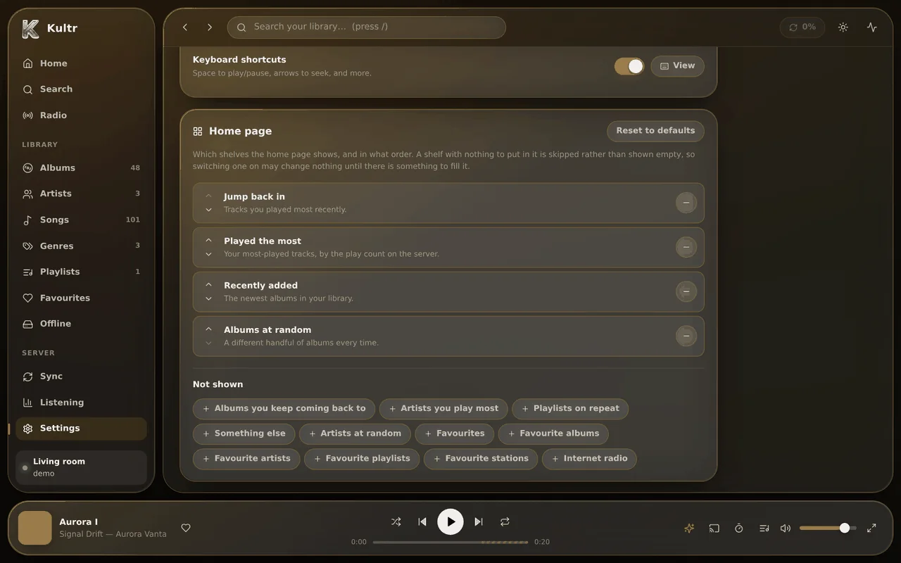
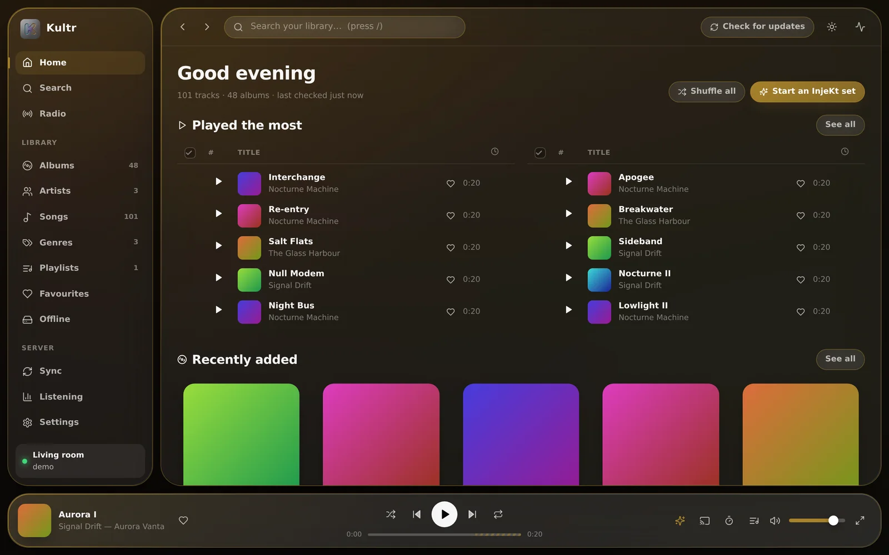
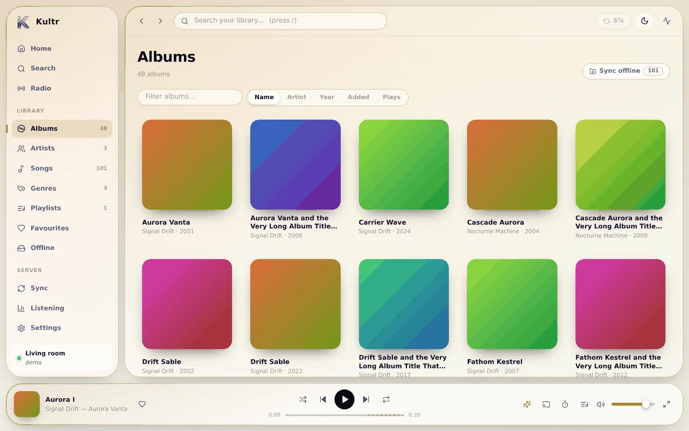
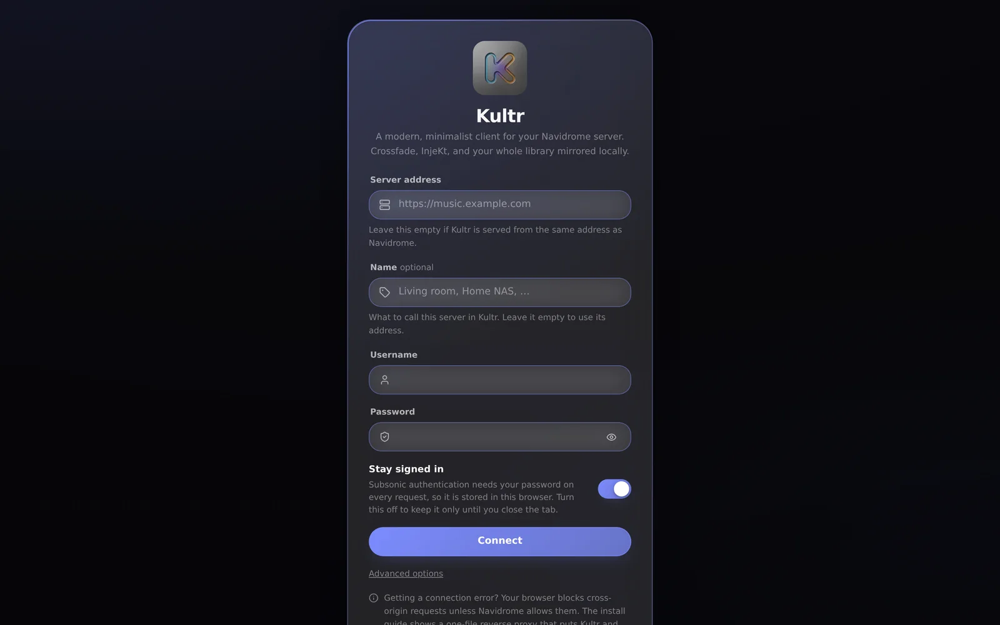

Kultr is a modern, minimalist client for Navidrome. It mirrors your whole library
locally, crossfades on two real decks, and beat-matches one track into the next.
No account, no trackingOpen source, Apache 2.0Self-host in a minute
Now playing
Re-entry
Nocturne Machine — Low Orbit
0:14
0:30
Up next
Try it: wait for the blend or press next — this whole page takes its colour from the cover, the way the app does.
A look at it
Glass, and whatever colour the music is.








Your library, mirrored locally.Browsing is instant because nothing is fetched to draw it.
What it does
Fast because it’s local. Smooth because it’s two decks.
Kultr keeps a copy of your library on the device, so no page waits on the server to draw. And every
track plays on one of two decks, so a transition is a real overlap, not a volume trick.
Your whole library, mirrored
One button copies every artist, album, track, playlist and genre to the device. Browsing, sorting and
searching are then instant, and keep working with the server switched off. After that, a check pulls
in only what moved — on start-up, hourly, or when you ask.
Instant searchWorks offlineIncremental
Crossfade that isn’t a trick
Two players genuinely overlap, for up to 20 seconds, in four fade shapes. Or switch it off for gapless: the next track starts the instant this one ends.
InjeKt
Beat-matched, key-aware transitions, planned from each track’s tempo, key, energy and structure.
A sync button on every page. Downloads go into the browser, or a folder you pick, named Artist - Album - Track.
As many servers as you like
Give each one a name, switch between them, and turn one off without deleting it.
Colour from the cover
The surfaces, the highlights and the backdrop all retint from whatever is playing. Then make it
yours: light or dark, three corner styles, six playheads, an accent blended with the artwork’s,
and a box for your own CSS.
It doesn’t lay one track over the next. It injects it.
Kultr decodes each track once and measures it: tempo and beat grid, musical key, loudness and brightness,
and where the intro ends and the outro begins. As soon as a track starts, it plans the hand-over
transition from those numbers — and shows you the plan.
Aurora I · 126 BPM · 8AVanta II · 118 BPM · 8A
Beat-matched at 122 BPM — this track down 3.2%, the next up 3.3%
Scroll sideways to see the whole transition.
Beat-matching, from both sides
Rather than drag the new track onto the old one’s tempo, it picks a tempo between them and moves both. Each side moves half as far, which is half as audible — and pairs a one-sided match would reject now work.
Bar alignment
The blend starts on a downbeat of the outgoing track and the incoming one enters on a downbeat of its own, so the grids actually line up.
Bass swap
The outgoing bass rolls off before the incoming bass comes up, so two kick drums never fight.
Harmonic mixing
Keys are worked out in Camelot notation. When two clash, it filter-sweeps out of the old track instead of blending into a muddy chord.
Intro skipping
The next track comes in at its first real downbeat, not after twenty seconds of ambient pad.
Auto-continuation
When the queue runs out it keeps going, with tracks chosen by tempo, key and energy, so the set keeps flowing.
Every part degrades gracefully. No analysis yet, tempos too far apart, or no Web Audio — and it quietly becomes a good ordinary crossfade.
In the browser, on Android and on iPhone — the same player, the same InjeKt, and settings that move
between them. The web version runs entirely in your browser and connects straight to your
Navidrome; rather host it yourself? It takes about a minute.
Web · PWA
In your browser
Open it, sign in to your Navidrome, and press Sync my library. Install it from Chrome or Edge, or with Share → Add to Home Screen on iOS.
Settings exported from one Kultr open in the others. What’s new
Your data
It talks to one server. Yours.
No analytics, no telemetry, no third-party requests, no fonts from anyone’s CDN. This website keeps the same rule.
Your password stays yoursSubsonic needs it to sign each request, so it’s kept on the device and sent nowhere but your own server. The apps keep it in the Android Keystore or the iOS Keychain.
The mirror lives with youThe library and InjeKt analysis stay on the device; plays go to your Navidrome, so they match everywhere. Settings → Reset Kultr erases the lot.
Downloads go where you sayInside the browser, or a folder you picked. A page can only write where you’ve pointed it — by design.
Backups leave secrets outSettings export to a small JSON file. Passwords and usernames are never in it, and servers only if you ask.
Vibecoded with Claude Code
Every part of Kultr — the Subsonic client, the two-deck audio engine, the tempo and key detection,
the interface, the tests and the install guides — was produced by prompting Claude Code rather
than typed by hand. It’s a fair thing to disclose. So was this website.